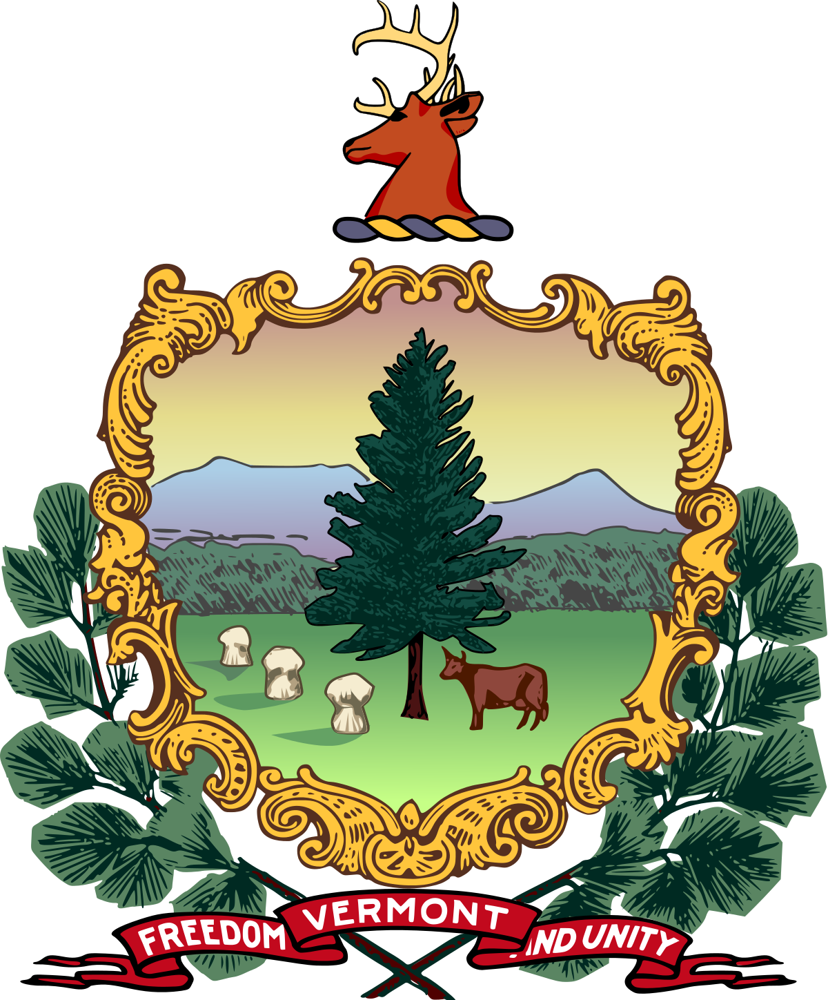
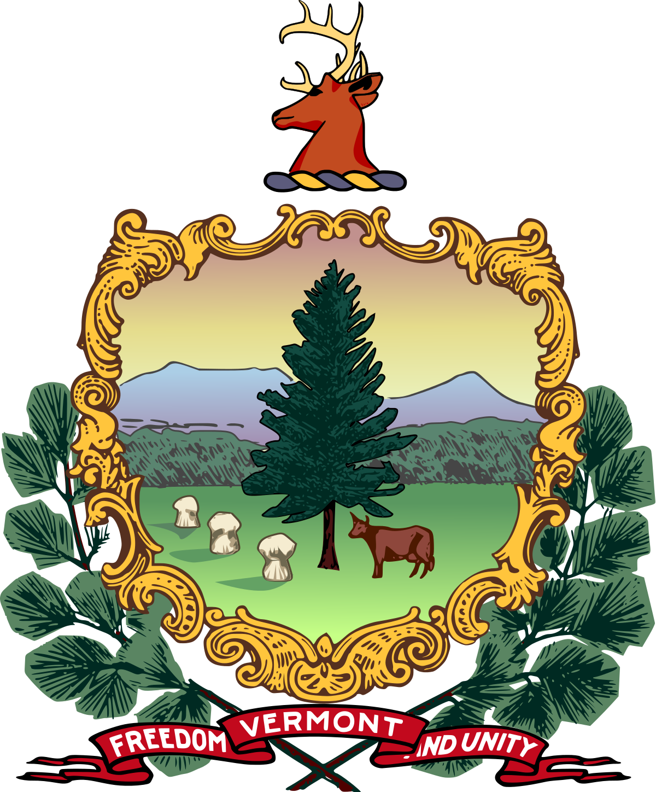

Professional
I am currently a Post-Doctoral Scholar in David Perkel's lab at the University of Washington studying auditory learning and memory and adult neurogenesis
Before that I received my PhD from the University of Maryland School of Medicine where I studied the neurodevelopmental effects of in utero pesticide exposure; I also studied the pharmacodynamics of a potential antidepressant, (2R,6R)-hydroxynorketamine
Before that I received my MS in Forensic Science from Syracuse University, where I was also a General and Organic Chemistry Tutor
Before that I received my BS in Chemistry with a minor in Music from Boston College, where I was also an RA
Before that I graduated from Hazen Union High School in Hardwick, VT
Personal
I'm interested in many applications of Data Science and AI, including to issues surrounding climate change (see CCCAI blog) and sabermetrics
When I'm not in the lab or at my computer I'm typically reading, fermenting something, hiking or camping with my amazing partner and energetic hound